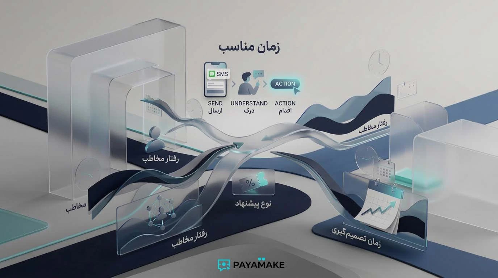
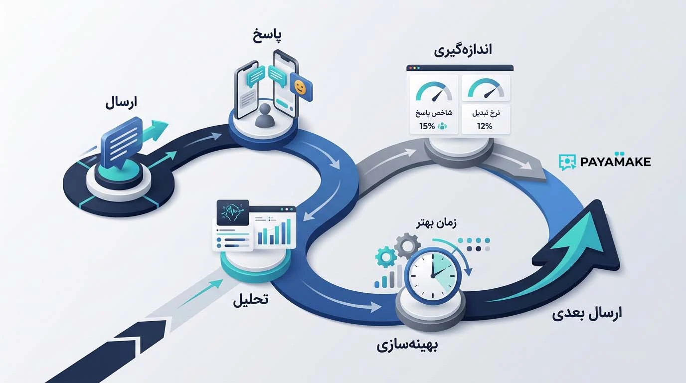
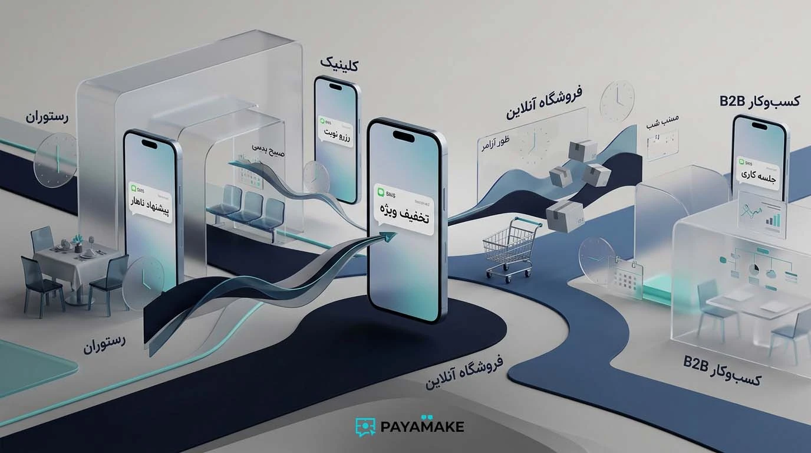
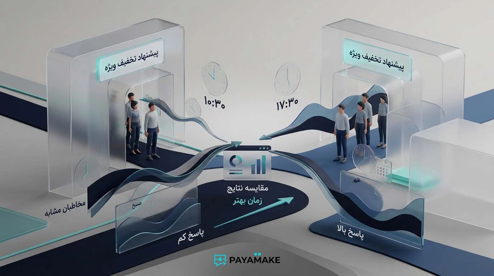

وقتی صحبت از ارسال پیامک تبلیغاتی میشود، معمولاً یکی از اولین سؤالها این است: «بهترین ساعت برای ارسال پیامک چه زمانی است؟» سؤال منطقی است، اما پاسخ آن یک عدد ثابت نیست. ساعت ارسال باید بخشی از استراتژی کمپین باشد، نه یک قانون آماده که برای همه کسبوکارها تکرار شود.
ممکن است یک فروشگاه اینترنتی با یک پیشنهاد محدود در عصر نتیجه خوبی بگیرد، اما همان ساعت برای یک شرکت خدماتی B2B مناسب نباشد. یک رستوران هم احتمالاً باید زمان ارسال را با زمان تصمیمگیری مشتری برای غذا هماهنگ کند. بنابراین قبل از اینکه دنبال یک «ساعت طلایی» باشیم، باید بفهمیم مخاطب چه زمانی آمادگی دیدن و استفاده از پیشنهاد ما را دارد.
چرا زمان ارسال پیامک تبلیغاتی مهم است؟
پیامک برخلاف بسیاری از کانالهای تبلیغاتی در یک فضای بسیار شخصی وارد میشود: تلفن همراه. همین ویژگی باعث میشود زمان دریافت پیام بخشی از تجربه مخاطب باشد. پیام مفیدی که در زمان مناسب برسد میتواند دیده شود؛ همان پیام اگر در زمان نامناسب ارسال شود ممکن است نادیده گرفته شود یا حتی برای مخاطب آزاردهنده باشد.
زمان ارسال روی چند بخش از مسیر کمپین اثر میگذارد: احتمال دیدهشدن پیام، فرصت تصمیمگیری، امکان پاسخ دادن یا تماس گرفتن و در نهایت شانس رسیدن به هدف کمپین. البته نباید همه نتیجه را به ساعت ارسال نسبت داد؛ مخاطب، متن، پیشنهاد و اعتبار فرستنده همزمان نقش دارند.
زمانبندی بخشی از خود پیشنهاد است
فرض کنید یک مجموعه غذایی برای ناهار پیشنهاد ویژه دارد. ارسال پیام در زمانی نزدیک به تصمیمگیری مشتری میتواند منطقیتر از ارسال همان پیشنهاد در نیمهشب باشد. یا اگر یک مجموعه خدماتی پیشنهاد مشاوره کاری دارد، قرار گرفتن پیام در ساعات فعالیت مخاطب میتواند از ارسال آن در ساعات استراحت منطقیتر باشد.

آیا یک ساعت طلایی برای همه وجود دارد؟
در نتایج جستجو درباره بهترین زمان ارسال پیامک تبلیغاتی بازههای زمانی مختلفی پیشنهاد میشود؛ از ساعات صبح تا عصر و حتی شب. این اختلاف یک نکته مهم را نشان میدهد: داده و تجربه یک کسبوکار را نمیتوان بدون بررسی روی همه کسبوکارها اعمال کرد. حتی منابعی که بازههایی مثل ۱۰ تا ۱۳ یا ۱۶ تا ۱۹ را مطرح میکنند نیز معمولاً تأکید دارند که نوع کسبوکار و مخاطب باید در تصمیمگیری لحاظ شود.
بنابراین این بازهها میتوانند برای شروع آزمایش مفید باشند، اما نباید آنها را نتیجه قطعی بدانیم. اگر داده واقعی مشتریان شما نشان دهد که یک زمان دیگر عملکرد بهتری دارد، همان داده برای کسبوکار شما ارزشمندتر است.
اگر هنوز هیچ دادهای از کمپینهای قبلی ندارید، از یک بازه منطقی شروع کنید و نتیجه را ثبت کنید. هدف این نیست که از اولین ارسال «ساعت ایدهآل» را حدس بزنید؛ هدف این است که با هر کمپین اطلاعات بهتری برای تصمیم بعدی بسازید.
زمان مناسب برای انواع کسبوکار
به جای ساختن یک جدول قطعی برای همه، بهتر است از منطق رفتار مشتری استفاده کنیم. نمونههای زیر نقطه شروع هستند و باید با تست واقعی تأیید شوند.
فروشگاه اینترنتی و خردهفروشی
اگر پیشنهاد شما تخفیف، موجودی جدید یا فروش محدود است، زمان ارسال باید با زمانی نزدیک باشد که مشتری معمولاً امکان بررسی پیشنهاد و خرید دارد. برای پیشنهادهای عصرگاهی، بازههای بعد از ساعات کاری میتوانند نقطه شروع آزمایش باشند. برای کالاهایی که خرید آنها در ساعات کاری هم انجام میشود، ساعات روز نیز ارزش آزمایش دارند.
رستوران و کافه
در این حوزه، زمان تصمیمگیری بسیار مهم است. پیشنهاد ناهار باید قبل از زمان انتخاب ناهار به دست مخاطب برسد و پیشنهاد شام نیز باید زمانی ارسال شود که مشتری هنوز در حال تصمیمگیری است. ارسال بسیار زود یا بسیار دیر میتواند ارتباط پیام با نیاز لحظهای را کم کند.
کلینیک، سالن زیبایی و خدمات نوبتی
در کسبوکارهای نوبتی، هدف همیشه فروش فوری نیست. گاهی هدف رزرو، یادآوری یا پر کردن ظرفیت خالی است. بنابراین زمان ارسال باید با زمان پاسخگویی مجموعه و فرصت مخاطب برای تماس یا رزرو هماهنگ باشد. پیام تبلیغاتی یک مرکز خدماتی را نباید بدون توجه به ساعات پاسخگویی ارسال کرد.
کسبوکارهای B2B
اگر مخاطب شما مدیر، مسئول خرید یا کارشناس یک شرکت است، پیام در ساعات فعالیت کاری معمولاً منطقیتر از ساعات استراحت است. در این سناریو، پیشنهادهای حرفهای و دعوت به تماس یا جلسه نیز باید با ریتم کاری مخاطب هماهنگ باشند.
کسبوکارهای محلی
در کسبوکار محلی، علاوه بر ساعت، منطقه و موقعیت مخاطب اهمیت زیادی دارد. اگر جامعه مخاطب را هدفمند انتخاب کردهاید، بهتر است زمان ارسال را با ساعت فعالیت همان کسبوکار و نیاز محلی هماهنگ کنید؛ نه اینکه صرفاً یک ساعت عمومی برای کل کشور انتخاب شود.

مخاطب را قبل از ساعت ارسال بشناسید
یکی از اشتباهات رایج این است که ابتدا ساعت انتخاب شود و بعد مخاطب را با آن تطبیق دهیم. در یک کمپین حرفهای مسیر بهتر برعکس است: ابتدا مخاطب را تعریف میکنیم، سپس زمان احتمالی حضور و تصمیمگیری او را بررسی میکنیم.
اگر جامعه مخاطب شما شامل گروههای کاملاً متفاوت است، حتی میتوان زمان ارسال را برای همه یکسان در نظر نگرفت. مثلاً مخاطبان یک پیشنهاد محلی، مشتریان قدیمی و مخاطبان جدید ممکن است رفتار یکسانی نداشته باشند.
این همان جایی است که ارتباط بین بازاریابی پیامکی هدفمند و زمانبندی مشخص میشود: هرچه مخاطب دقیقتر تعریف شود، فرضیهای که برای زمان ارسال میسازید نیز قابلاعتمادتر خواهد بود.
نوع پیام، زمان مناسب را تغییر میدهد
فقط نوع کسبوکار مهم نیست؛ خود پیام هم روی زمانبندی اثر دارد. یک پیامک تبلیغاتی فروش مستقیم، پیام یادآوری، پیشنهاد بازگشت مشتری و پیام مناسبتی لزوماً در یک زمان بهترین عملکرد را ندارند.
| نوع پیام | منطق انتخاب زمان |
|---|---|
| پیشنهاد فروش فوری | نزدیک به زمانی که مخاطب امکان تصمیمگیری و خرید دارد |
| معرفی محصول یا خدمت | زمانی که مخاطب فرصت خواندن و بررسی پیام را دارد |
| رزرو و نوبتدهی | هماهنگ با ساعات پاسخگویی و امکان رزرو |
| بازگشت مشتری | زمانی که پیشنهاد با چرخه خرید مشتری ارتباط دارد |
| پیام مناسبتی | متناسب با زمان شروع یا اوج مناسبت، نه صرفاً یک ساعت ثابت |

چطور زمان مناسب را آزمایش کنیم؟
اگر واقعاً میخواهید بدانید بهترین زمان ارسال پیامک برای کسبوکار شما چه زمانی است، به جای حدس زدن باید آزمایش طراحی کنید. این آزمایش لازم نیست پیچیده باشد؛ مهم این است که متغیرهای اصلی تا حد ممکن ثابت بمانند.
یک هدف انتخاب کنید
مثلاً تماس، ثبت سفارش، رزرو یا دریافت کد تخفیف. بدون هدف مشخص، مقایسه زمانها معنی مشخصی ندارد.
دو گروه مشابه بسازید
اگر مخاطب اجازه میدهد، دو گروه با ویژگیهای نزدیک انتخاب کنید تا اختلاف نتیجه بیشتر به زمان ارسال مربوط باشد.
فقط زمان را تغییر دهید
متن، پیشنهاد و مسیر اقدام را تا حد امکان ثابت نگه دارید؛ اگر همزمان چند چیز را تغییر دهید، علت اختلاف نتیجه مشخص نخواهد بود.
نتیجه را ثبت کنید
تعداد پاسخ، تماس، لید، فروش یا هر شاخصی که از ابتدا تعریف کردهاید ثبت شود.
آزمایش را تکرار کنید
یک نتیجه بهتنهایی قانون نمیسازد. در چند کمپین مشابه، الگو را بررسی کنید و بعد زمان را بهینه کنید.
مثال یک آزمایش ساده
فرض کنید یک فروشگاه میخواهد یک پیشنهاد یکسان را برای دو گروه مشابه آزمایش کند. گروه اول ساعت ۱۰:۳۰ و گروه دوم ساعت ۱۷:۳۰ پیام را دریافت میکنند. اگر گروه دوم پاسخ بیشتری بدهد، هنوز نمیتوان گفت ۱۷:۳۰ همیشه بهترین زمان است؛ اما یک فرضیه ارزشمند برای آزمایشهای بعدی ساختهاید.
در کمپینهای بعدی میتوانید همین مقایسه را با گروه دیگری تکرار کنید. اگر الگو تکرار شد، اطمینان شما بیشتر میشود. اگر نتیجه تغییر کرد، احتمالاً متغیر دیگری مثل روز هفته، نوع پیشنهاد یا ترکیب مخاطب هم در نتیجه نقش داشته است.
اشتباهات رایج در زمانبندی تبلیغات پیامکی
اینکه یک سایت یا رقیب یک ساعت را بهترین زمان معرفی کرده، دلیل نمیشود همان ساعت برای مخاطب شما مناسب باشد.
زمانی که برای تیم شما مناسب است لزوماً زمانی نیست که مشتری آمادگی دریافت پیام را دارد.
اگر پیام باعث تماس یا پاسخ میشود، بهتر است زمانی ارسال شود که بتوانید درخواست ایجادشده را پیگیری کنید.
اگر متن، پیشنهاد، مخاطب و ساعت را با هم تغییر دهید، تحلیل نتیجه دشوار میشود.
صبح خیلی زود یا شب خیلی دیر میتواند تجربه مخاطب را خراب کند؛ حتی اگر پیشنهاد شما ارزشمند باشد.
یک ارسال برای تعیین قانون کافی نیست. روند چند آزمایش را بررسی کنید.

چکلیست زمانبندی یک کمپین پیامکی
- میدانم مخاطب کمپین چه کسی است.
- هدف پیام را مشخص کردهام.
- میدانم مخاطب چه زمانی احتمالاً فرصت بررسی پیشنهاد را دارد.
- ساعت ارسال با نوع کسبوکار و نوع پیام هماهنگ است.
- ساعات نامناسب و آزاردهنده را حذف کردهام.
- اگر کمپین باعث تماس میشود، امکان پاسخگویی در آن زمان را دارم.
- برای مقایسه زمانها یک معیار مشخص تعریف کردهام.
- اگر امکانش باشد، دو زمان مختلف را با گروههای مشابه آزمایش میکنم.
- نتیجه هر ارسال را ثبت میکنم.
- تصمیم بعدی را بر اساس داده کمپینهای قبلی میگیرم.
جمعبندی
اگر به دنبال یک پاسخ کوتاه برای سؤال «بهترین زمان ارسال پیامک تبلیغاتی چه زمانی است؟» هستید، پاسخ واقعی این است: زمانی که مخاطب شما آماده دریافت و انجام اقدام موردنظر کمپین است. بازههای عمومی میتوانند برای شروع آزمایش مفید باشند، اما جای داده واقعی مشتریان شما را نمیگیرند.
زمانبندی را مانند یک متغیر قابل آزمایش ببینید. مخاطب را دقیق انتخاب کنید، پیشنهاد و متن را مشخص نگه دارید، زمانهای مختلف را با گروههای مشابه مقایسه کنید و نتیجه را ثبت کنید. به این ترتیب، به جای دنبال کردن یک «ساعت جادویی»، به یک زمانبندی متناسب با کسبوکار خودتان میرسید.